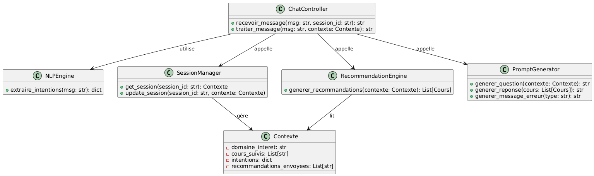
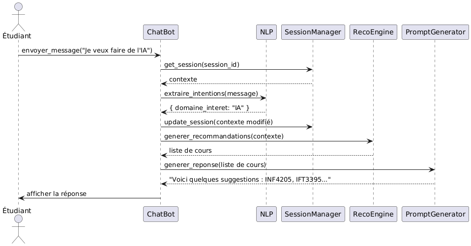

Conception¶
Architecture¶
L’architecture du système repose sur une approche modulaire centrée autour du module conversationnel. Elle s’organise en trois couches principales : l’interface utilisateur (front-end), le serveur applicatif (back-end) et le moteur de recommandation.
Front-end (React)¶
L’interface utilisateur inclut un composant dédié ChatBot.js, qui permet à l’étudiant d’interagir en langage naturel. Ce composant assure :
- l’envoi des messages au serveur via des requêtes HTTP (format JSON) ;
- l’affichage dynamique du dialogue ;
- l’insertion automatique des cours recommandés dans le calendrier académique.
API (FastAPI)¶
Le back-end expose une API REST dans le fichier /api/chat.py, qui reçoit les messages utilisateur accompagnés d’un identifiant de session. L’API :
- analyse le message à l’aide de spaCy pour en extraire les intentions (intérêts, préférences, objectifs) ;
- conserve le contexte de la session (dans la mémoire du serveur) pour permettre une interaction multi-tours ;
- appelle le moteur de recommandation selon les informations disponibles.
Moteur de recommandation¶
Situé dans le dossier /utils/, ce moteur applique une logique à base de règles simples pour :
- exclure les cours déjà suivis ;
- identifier les cours obligatoires non encore validés ;
- croiser les intérêts exprimés avec les cours restants disponibles ;
- générer des combinaisons de cours cohérentes (maximum 4 par trimestre) ;
- fournir plusieurs options adaptées, prêtes à être intégrées dans le calendrier.
Gestion du calendrier¶
Une fois la combinaison de cours validée, elle est automatiquement insérée dans le calendrier académique de l’interface, en tenant compte :
- des trimestres où les cours sont offerts ;
- des horaires disponibles ;
- des éventuels ajustements manuels par l’étudiant.
Communication entre modules¶
Tous les échanges entre le front-end et le back-end sont gérés via des appels API REST asynchrones, garantissant une interaction fluide et sans rechargement de page. Le système est conçu pour être extensible, permettant l’évolution du moteur de recommandation ou le remplacement du NLP.
Choix technologiques¶
-
React (Front-end) Utilisé pour construire une interface interactive et réactive, notamment le composant
ChatBot.js. -
FastAPI (Back-end) Framework léger et performant pour créer l’API REST, bien adapté au traitement NLP en Python.
-
spaCy (NLP) Bibliothèque efficace pour l’extraction d’intentions à partir du langage naturel, intégrée côté serveur.
-
JSON (échange de données) Format léger pour les communications entre le front-end et l’API.
Modèles et diagrammes¶
- Diagramme de UML

- Diagramme de Sequence

- Architecture Logiciel

Prototype¶
1. Interface du chatbot¶
Objectif : Permettre à l’étudiant d’échanger librement avec le système, dans une interface de type messagerie.
Implémentation actuelle :
- Un composant React
ChatBot.jsa été intégré à l’interface du planificateur. - L’interface comprend un champ de saisie de texte, un bouton “Envoyer”, et une zone d’affichage des messages échangés.
- Les messages sont envoyés à l’API via une requête HTTP (POST en JSON), puis les réponses sont affichées dans le fil de discussion.
Comportement attendu : L’étudiant peut formuler des phrases libres comme “Je veux me spécialiser en IA” ou “Je suis bon en développement web”, et recevoir une réponse textuelle immédiate.
2. Dialogue simulé¶
Objectif : Valider le mécanisme d’envoi-réception entre l’interface et le serveur.
Fonctionnement :
- Le message envoyé par l’étudiant est analysé côté serveur à l’aide de règles conditionnelles simples.
- En fonction de mots-clés identifiés (ex. : “IA”, “web”), une réponse adaptée est renvoyée.
- Aucun traitement NLP avancé n’est encore intégré à ce stade, l’objectif étant de tester la fluidité du flux.
Exemple d’interaction :
Étudiant : Je veux me spécialiser en intelligence artificielle Chatbot : Voici quelques cours recommandés : IFT3395, INF4215, LOG2810
Limites actuelles :
- Pas encore de reformulation intelligente si le message est flou ;
- Les intentions ne sont pas mémorisées d’un message à l’autre.
3. Recommandations affichées¶
Objectif : Afficher des suggestions de cours adaptées aux intérêts exprimés.
État actuel :
- Le chatbot génère des recommandations textuelles directement lisibles dans l’interface.
- Les cours sont choisis à partir de blocs prédéfinis correspondant à des domaines d’intérêt.
Prévision :
- Les recommandations seront prochainement liées à la structure réelle du programme (via le moteur de règles) ;
- Une fonctionnalité d’ajout automatique dans un trimestre du calendrier est prévue (glisser-déposer ou bouton “ajouter”).
4. Diagrammes UML / de séquence¶
Objectif : Soutenir la conception technique par une modélisation formelle.
Éléments produits :
- Un diagramme de classes UML présente les composants du module chatbot :
ChatController,NLPEngine,SessionManager,PromptGenerator, etc., avec leurs méthodes principales. - Un diagramme de séquence détaille le déroulement d’une interaction : depuis la réception du message jusqu’à la génération et l’affichage de la réponse.
5. Maquette¶
Objectif : Préfigurer l’intégration visuelle du chatbot dans l’interface complète du planificateur.
État actuel :
-
Une maquette statique a été dessinée (via Figma ou papier) pour représenter :
-
l’emplacement du chatbot ;